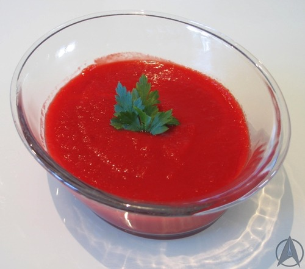

Plomeek Soup

Description
A classic dish from a classic Star Trek race - Plomeek soup, a Vulcan dish. Most Vulcans, including the most famous one, Spock, are vegetarian.
This is described as being quite a bland soup.
Ingredients
- 1 onion
- 2 garlic cloves
- 5 carrots
- 2 small-medium sweet potatoes, peeled
- 3 small-medium beetroots, peeled
- 3 sticks celery
- 1 litre vegetable stock
- Salt and pepper
- Vegetable oil
- Parsley for garnish (optional)
Steps
- Start by peeling the beetroots and then the sweet potatoes. Wear a pair of gloves when peeling the beetroots if you don’t want to get pink hands!
Then chop up all the vegetables, including the onion and garlic cloves, into chunks.
Don't worry about making them too exact as they will all get blended at the end.
- Start by sauteeing the garlic and onion in vegetable oil until soft. Then add the rest of the vegetables and cook for a few minutes. Add 750ml of the stock, reserving the rest.
Bring to the boil, then reduce the heat and simmer until all vegetables are quite soft, about 45 minutes to 1 hour.
- Ladle portions of the vegetables and stock into a blender and blend until smooth. Alternatively, you could use a hand blender if you have one.
When all the soup is blended, check the flavour and add salt and pepper to taste. At this point, check the soup’s thickness - if too thick, add the remaining vegetable stock as needed.
- Serve and garnish with parsley if desired - although I’m sure the Vulcans would consider this highly illogical.